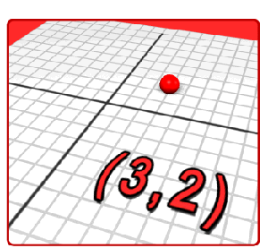
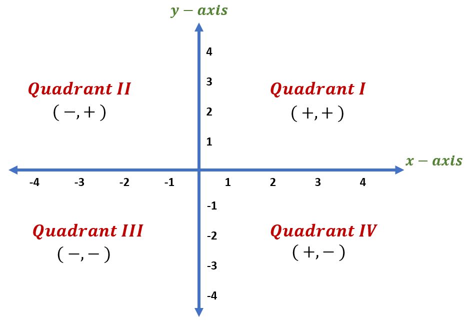

A coordinate plane is a two-dimensional grid used to locate points using ordered pairs.
A point is written as (x, y), where x represents the horizontal position and y represents the vertical position.
We always write the x coordinate first, followed by the y coordinate.
The coordinate plane is divided into four sections called quadrants.
Take a look at the graph below to see how the quadrants are labeled:

To plot a point on the coordinate plane, we follow the ordered pair (x, y).
Plot the point (3, 2).
Plot the point (-1, 4).
Plot the point (-1, -3).
Plot the point (3, -2).